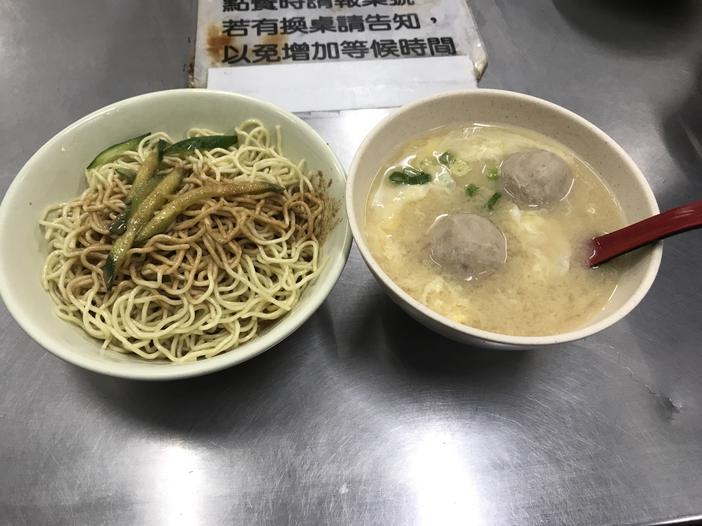

這間距離大巨蛋走路約10分鐘的劉媽媽涼麵，是晚上看完棒球肚子餓想吃宵夜的最佳選擇，他的營業時間是晚上九點半至隔天早上九點，彷彿是為飢腸轆轆的棒球迷量身打造的宵夜店。劉媽媽涼麵的菜單很簡單，只有賣涼麵、味噌貢丸湯和荷包蛋，而這剛好也是一個非常不錯的宵夜組合。
劉媽媽涼麵的醬汁並非濃稠狀，帶點水水的很好攪拌，麻醬味道適中，如果是重口味的人可能會覺得不夠濃郁，但我很喜歡蒜味重的風味，適合悶熱的天氣食用。涼麵伴有少許小黃瓜絲，清新爽口，而麵體本身也細Q好吃。再來是我最愛的三合一味噌湯，三合一就是味噌、蛋花跟貢丸的綜合湯，味噌湯頭不會太過鹹，喝起來帶有一點甘甜感，重點是很暖胃，不管是白天喝還是晚上喝都不錯。貢丸也彈的還有肉汁感，蛋花也打得非常均勻，讓整體湯頭更加滑順。
整體來說劉媽媽涼麵的價格不貴但也不便宜，但是以宵夜來說這個價格能吃上一碗涼麵加味噌湯已經非常滿足。唯一的缺點是尖峰時段人潮眾多，可能需要等候一下，不過絕對值得！